AI Academy · Level 1 · Grade 6 · Week 29 · Student lesson
Find a Real Problem
Learn to understand, design, build, test and explain AI systems responsibly.
Project: Helpful Classroom Sorter
THE CONNECTED WEEK
Name the need. Define the outcome. Keep the solution open.
Start the final fictional activity project, inspect limited observations and write a bounded brief before choosing a mechanism.
Keep one habit: Read the evidence → define useful outcomes → compare a simple alternative.
Main lesson · Section 1
What problem would this project actually solve?
Begin with observed difficulty rather than a preferred technology.
Start before the solution
“Build an AI app” names a possible solution. A useful project brief first names who needs help, what happened and how you will recognise improvement.
Recall the limits of a paper-project permission
A teacher permits a paper prototype using fictional activity requests. Does this permit collecting real pupils’ names and publishing their choices? Explain.
Close your notes first. A rough first answer helps us choose the right starting point; it is not a score for your ability.
After trying, check the relevant lesson or ask your teacher. Change the part of your explanation that the evidence shows was wrong.
Your learning goals
I can describe a specific user difficulty using supplied evidence without inventing its cause.
I can define a useful outcome and a way to observe it before choosing a solution.
I can choose a small project with clear boundaries, permitted information and a simple alternative.
Earlier wording, alternatives and picture transcripts
Your learning target
Remember before reading
Without opening the old lesson, explain one key idea from Humans Set Boundaries. Give an example and a mistake that the idea helps you avoid.
Without opening the old lesson, explain one key idea from Prompts Are Design Instructions. Give an example and a mistake that the idea helps you avoid.
Without opening the old lesson, explain one key idea from Fair for Whom?. Give an example and a mistake that the idea helps you avoid.
A strong project begins with a specific user and observable need.

LEARNING TARGET Students spend three minutes finding returned books. Compare shelf labels with an AI locator. Define one fair success test before choosing a solution.
Learner name:
Readiness for the connected explanation
This week’s end goal
By the end, I can turn a recorded problem into a bounded, measurable project goal.
Main lesson · Section 2
Begin the final paper activity-recommender sequence
Use the supplied fictional log; a recommendation remains a choice.
Meet the users and project sequence
For the final project sequence, we will develop a small activity recommender on paper. Its users are fictional pupils choosing a classroom activity that fits their available time and room conditions.
We will decide what the recommender must do, build a traceable process, test it and explain its limits. A recommendation is a suggestion; the pupil can decline it.
Read the ten-request observation
Start before the solution. Our supplied observation log describes ten fictional requests made using an activity catalogue. Six first choices fit the request’s time and room conditions. Four did not and needed another choice.
These invented classroom records give us a problem to investigate. They are not observations of your classmates and do not show how often this happens in other classes.
Write only what the evidence establishes
A useful problem statement is: “In the supplied ten-request exercise, four first choices did not fit the stated time or room conditions, so those users had to choose again.” “We need AI” names a possible technology but says neither who needs help nor what should improve.
The log also does not establish whether unclear wording, missing information or another cause produced the mismatches.
Earlier wording, alternatives and picture transcripts
PICTURE STORY
Look Closely Before You Explain
Pictures give clues; evidence tells us what the clues mean.

MYSTERY 'Students need AI' is not a problem statement; 'students spend five minutes finding misplaced supplies after art' is observable and testable.
What do you notice?
Name three visible details without explaining them yet.
Circle the detail most connected to the system's decision.
Name one detail that may be decoration or distraction.
Make a first prediction and state the clue that supports it.
My observations, prediction, and evidence:
GOOD THINKING A prediction can change when stronger evidence appears.
A closer explanation
Main lesson · Section 3
Define useful outcomes before building
Check compatibility and honest no-match results without promising enjoyment.
Separate observation, need and project boundary
From an observed difficulty to a testable goal
Define compatibility and no-match success
Our target outcome is a compatible suggestion when the catalogue contains one, and a clear no-match message when none fits.
Compatibility means respecting the stated conditions; it does not mean that every pupil will enjoy the activity. We can check time and room conditions from a request and catalogue. Enjoyment would need different evidence.
Count helpful results as well as wrong suggestions
Count compatible suggestions, incompatible suggestions and no-match messages separately. Otherwise a system could avoid every wrong suggestion by refusing to suggest anything.
If a valid option existed, that refusal would still fail to provide the intended help. Record the total number of requests so a count has a clear denominator.
Point to the input, the deciding step and the result in this week’s visual. Explain the same step in ordinary words. A picture helps when you can say what each part represents.
Earlier wording, alternatives and picture transcripts
VISUAL MECHANISM
Input → Process → Output
Follow the information instead of imagining magic inside the machine.


INPUT observations and interview evidence
PROCESS identify user, situation, need, and measurable effect
OUTPUT testable problem statement without a preselected solution
CORE IDEA A strong project begins with a specific user and observable need.
UNDER THE HOOD Problem framing separates evidence about a user's need from assumptions about a solution. A strong statement identifies who, when, what observable difficulty occurs, and how improvement could be measured.
Draw a fresh example with all three stages:
A closer explanation
Connect the picture and the explanation
Main lesson · Section 4
Compare technology-first claims with observable needs
A specific burden and a limited observation suggest questions to test.
Pictures paired with their evidence

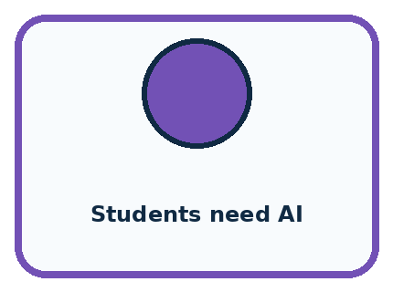
The case to investigate
CASE 1 — Students need AI Clue: technology-first claim. Meaning: weak framing.

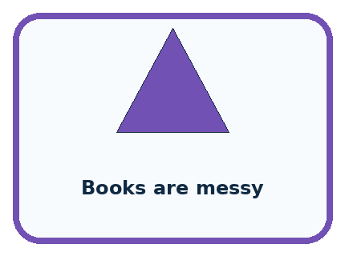
The case to investigate
CASE 2 — Books are messy Clue: vague judgment. Meaning: needs observation.

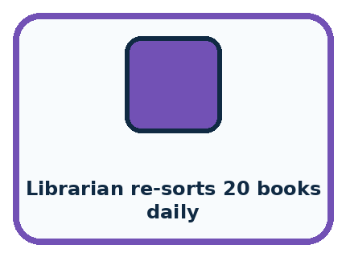
The case to investigate
CASE 3 — Librarian re-sorts 20 books daily Clue: specific burden. Meaning: testable need.

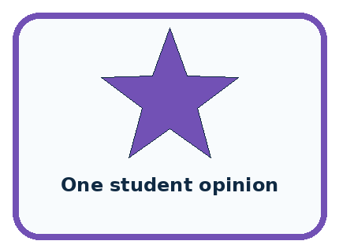
The case to investigate
CASE 4 — One student opinion Clue: useful but limited. Meaning: seek more evidence.
Discuss the confusing pair
Which two pictures are easiest to confuse? What evidence separates them?
Keep the limit in view
BOUNDARY Do not collect personal stories unrelated to the design question.
Earlier wording, alternatives and picture transcripts
PICTURE GALLERY
Four Cases, Four Clues
Use the visual cue, then read the evidence carefully.
CASE 1 — Students need AI Clue: technology-first claim. Meaning: weak framing.
CASE 2 — Books are messy Clue: vague judgment. Meaning: needs observation.
CASE 3 — Librarian re-sorts 20 books daily Clue: specific burden. Meaning: testable need.
CASE 4 — One student opinion Clue: useful but limited. Meaning: seek more evidence.
Change one thing in the pictured case
Change: The approved list contains no tray with every requested tool.
Prediction: The finder should report no suitable tray rather than guess.
Reason: Success includes honestly identifying unsatisfied requirements.
Main lesson · Section 6
Trace the separate craft-tray problem
Keep the eight tray requests separate from the ten activity requests.
Read the tray observation and permitted scope
A fictional class loses time finding the correct craft tray.
In eight recorded requests, three selected trays lack a required tool; five match.
The teacher permits a paper finder using fictional requests and an approved tray list, with no pupil names.
Return to the ten-request activity problem

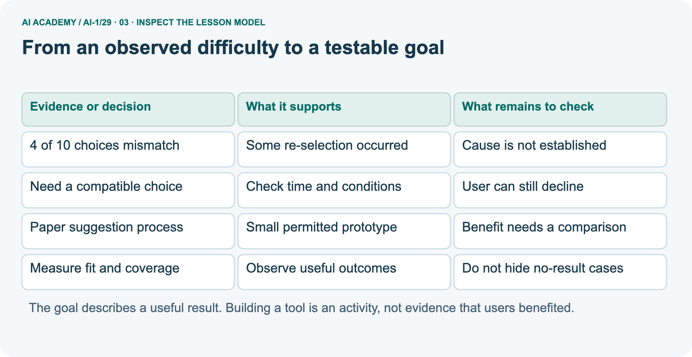

Trace observation, goal and success check

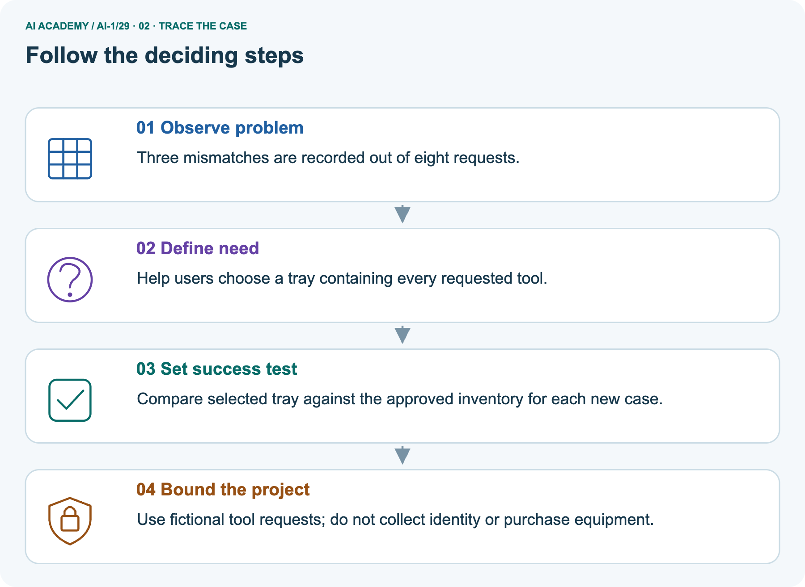

Read the picture one step at a time
Explain the measurable goal
The mismatch record describes a concrete need. A measurable goal checks whether the chosen tray satisfies the request; calling the system smart would not tell us how to evaluate it.
Start with a transparent paper baseline, and keep unsatisfied requests visible instead of selecting a near match without warning.
Read the labelled picture: Write a one-sentence project goal and say what evidence would count as a failure.
Predict when no tray satisfies the request
Before opening the no-suitable-tray picture, suppose no approved tray contains every requested tool. What result would respect the requirement? How will you distinguish this genuine no-match case from a missed valid option?
Check the no-match response

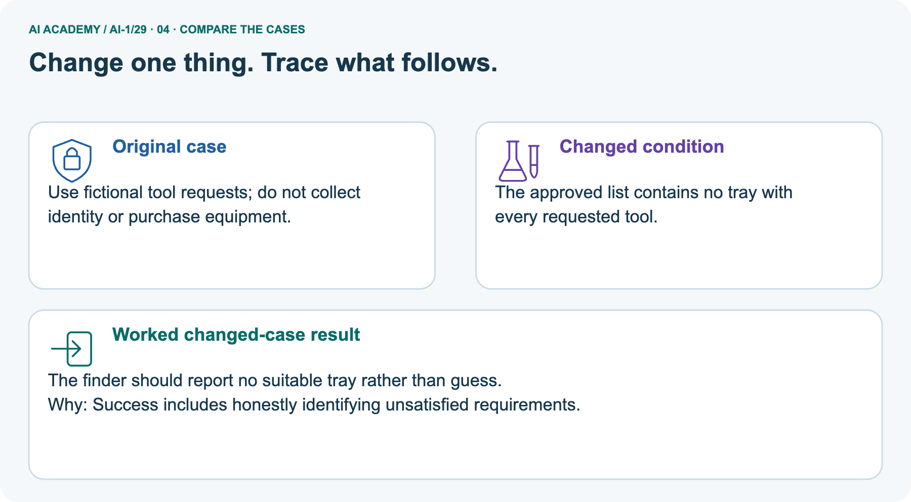

Limit the population and technology claims
Eight requests do not show the problem’s frequency across the entire school or prove AI is necessary.
Earlier wording, alternatives and picture transcripts
WORKED EXAMPLE
Watch the Reasoning, Not Just the Answer
Every step connects a claim to observable evidence.

CASE 'Students need AI' is not a problem statement; 'students spend five minutes finding misplaced supplies after art' is observable and testable.
STEP 1 — OBSERVE observations and interview evidence
STEP 2 — TRACE identify user, situation, need, and measurable effect
STEP 3 — CONCLUDE testable problem statement without a preselected solution
MODEL REASONING A strong statement names the user, context, observable difficulty, and desired improvement without requiring AI.
Protect privacy, avoid leading questions, and distinguish what the user said from your inference.
DO NOT OVERCLAIM Do not collect personal stories unrelated to the design question.
What new evidence could change this answer?
A closer explanation
| Project choice | Boundary for this sequence | Reason |
|---|---|---|
| Users and setting | Fictional classroom activity requests | A clear situation to test |
| Information | Available minutes and quiet-room requirement | Relevant to compatibility |
| Action | Suggest an activity or report no match | The user retains the choice |
| Outside the project | Names, profiles, purchases and public posting | Not needed for this paper task |
The teacher permits a paper prototype using fictional requests and an approved catalogue. We do not need names, home details or a history of a pupil’s choices.
A request can say “10 minutes, quiet room required” without identifying anyone. Use only the request information needed to test the intended outcome.
A clear catalogue or a short checklist may solve this problem. We will compare a proposed recommender with a simple starting method instead of assuming a more complicated system is better.
This project can use explicit rules; it does not have to fit a machine-learning model. The choice should follow the problem, available evidence and limits of the task.
Learn from the worked case
Cover the result before checking it. Say what is given, choose the procedure, and follow one step at a time. Then uncover the result and explain your first mismatch. Ask why a step is allowed, not only what number it produces.
A pictorial worked case: Find a Real Problem
The facts we will use

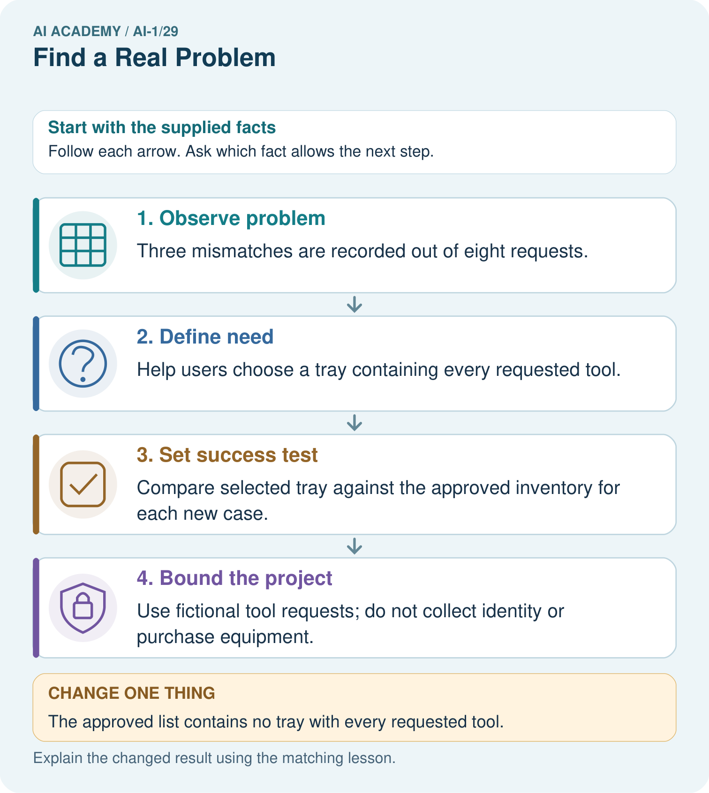

Why this result follows
What this example does not establish
Change one thing: The approved list contains no tray with every requested tool. Predict the result before checking the explanation. What remains the same?
Main lesson · Section 7
Specify what would count against your solution
Keep motivation records separate from evaluation of a tool built later.
Compare against a useful simple method
Before building, say what would count against your idea. If a clear catalogue already produces compatible choices for all supplied cases, adding a recommender might offer little benefit on those cases.
If the recommender hides valid options or produces unexplained no-match messages, revise it or keep the simpler method. A project can succeed as an investigation even when the evidence favours a simpler solution.
Label observation, plan and evaluation separately
Keep the ten-request observation log separate from later evaluation records. It motivates the problem; it is not a fair test result for a tool that has not been built.
Later weeks will introduce explicit requirements and test cases, including a reserved final set. Label plans as plans and measured results as results.
Repair both tempting claims
CLAIM A A popular technology is proof of a real problem.
CLAIM B The first interview represents every user.
STRONG ANSWER FRAME I claim ______ because the evidence shows ______. The process is ______. One limit is ______.
Earlier wording, alternatives and picture transcripts
COMPARE
Same Result, Different Reason
A comparison helps reveal the true concept boundary.
| Case | Evidence | What it shows |
|---|---|---|
| Students need AI | technology-first claim | weak framing |
| Books are messy | vague judgment | needs observation |
| Librarian re-sorts 20 books daily | specific burden | testable need |
| One student opinion | useful but limited | seek more evidence |
Repair two tempting claims
Repair:
Repair:
A closer explanation
Main lesson · Section 8
Practise: separate findings from hypotheses
A mismatch count does not establish everyone’s feelings or its cause.
Repair the unsupported catalogue story
Suppose a team writes “All pupils hate the catalogue because it is too long.” The supplied log says nothing about every pupil’s feelings or the cause of the mismatches.
A more careful note is “Four of ten first choices were incompatible; the cause is not yet known.” A hypothesis such as “the time information may be hard to find” is something to investigate, not an established finding.
Propose a permitted investigation without collecting new personal data
If we later investigate the cause, we could inspect where compatibility information appears in the catalogue or have a teacher organise a permitted comparison of clearer formats.
Do not quietly collect real pupils’ data just because it might help. For this sequence, the supplied fictional records are enough to build and test a paper process.
Inspect unsupported conclusions in W2
Use workbook W2 for the connected example “A problem worth solving”. First fill the input and rule boxes. Try the middle steps before asking for a hint. After a hint, try the next step yourself.
| Plan | Do | Check |
|---|---|---|
| What is given? Which rule or procedure applies? | Record each intermediate step. | Does the result follow? What remains unknown? |
Explain your trace to a partner. Your partner points to one step to check. Swap roles on the next case. Each person writes their own explanation.
Challenge the AI-is-the-outcome claim
Use the worked case for A problem worth solving. Proposed explanation: “Using AI is itself the outcome”. Decide whether this explanation is supported.
Point to the step or supplied fact that decides; explain your repair if needed.
Answer on your own before discussion. If you are unsure, say which step you need help with.
Return to the tray goal
Write a one-sentence project goal and say what evidence would count as a failure.
This is supported practice. Keep the separately named independent case for an attempt before feedback.
Earlier wording, alternatives and picture transcripts
GUIDED PRACTICE
Try It, Check It, Explain It
Use support now so you can succeed independently later.

Explain how the picture story demonstrates this idea: A strong project begins with a specific user and observable need.
Use a fresh example to explain user.
Trace a new input → process → output example.
Find and repair the error in: The first interview represents every user.
Invent one edge case and name the safe response.
PARTNER CHECK Point to the evidence. Do not accept an answer that only repeats the vocabulary word.
A closer explanation
Practise with less help: Identify claims beyond the evidence
Check your reasoning
Explain the picture
Main lesson · Section 9
Investigate a need through a supplied role-play
Practise neutral questions without inventing personal testimony.
The three fictional evidence cards
Fictional need-finding role-play: use these supplied statements rather than classmates’ personal experiences. Requester card: “I had ten minutes and needed a quiet activity. My first choice took twenty minutes, so I chose again.” Catalogue card: “Durations and room conditions are listed, but this record does not show why the requester missed them.” Observer card: “Across ten fictional requests, six first choices fit and four did not.”
Ask, distinguish evidence and frame the goal
One partner reads the requester card and the other asks neutral questions: What were you trying to do? What happened next? What information would you need to check a compatible choice? Answer only from the cards and mark absent answers unknown. Each learner writes a need statement, a possible explanation labelled hypothesis, a measurable outcome and a simple checklist alternative. Swap roles. Do not claim the role-play establishes real pupils’ preferences or the effectiveness of an unbuilt recommender.
Keep a normal case and an edge case clearly separated.
Record what happened—even when it does not match your prediction.
Explain the result, one limitation, and the next useful test.
Keep the statement and its evidence limits
| Case | Prediction | Observed result | What it means |
|---|---|---|---|
| Normal | |||
| Edge |
Before trying: what do I expect, and why? While trying: which step could first go wrong? Afterwards: what did I actually observe, and what should change? Keep “not run” if you only traced the procedure.
Earlier wording, alternatives and picture transcripts
EXPLORER LAB
Need-Finding Interview
Predict first, test honestly, and explain what the evidence means.

State your prediction before the result is known.
Complete the task: Interview a classmate and write one testable need statement.
INDEPENDENCE After support is removed, repeat the proof with a fresh case.
Plan → try → check
Main lesson · Section 14
Try alone: frame the equipment-cupboard problem
Use the supplied box records to write a new bounded brief.
The independent record and task
In a fictional equipment cupboard exercise, eight teams choose a box from a list. Three boxes do not contain the items required by the corresponding request; five do.
The teacher permits a paper box-finder using fictional item requests and an inventory. Write a brief naming the user difficulty, evidence, desired outcome, necessary information, an excluded action and a simple alternative.
Identify one cause or benefit that these counts do not establish.
Keep your first attempt
Attempt this case before feedback. Record any help. Earlier examples below are further practice; a case already practised with feedback cannot establish fresh transfer.
Your teacher has the independent answer and scoring criteria. Complete the matching workbook week to keep your practice evidence together.
Use feedback afterwards
Attempt the independent case before hints. Record whether you worked alone, used a hint or followed a model. After feedback, fix the first unsupported step and explain why it changed.
A later check uses a changed case, not a copied answer.
Earlier wording, alternatives and picture transcripts
Independent case: Frame a different problem independently
Week 29 Independent application
Close the worked explanation. Apply the idea to this different question without copying.
Learners often cannot find borrowed classroom books. Define the problem before choosing an AI tool. Suggest one simple solution to compare with AI.
My answer, with a trace, calculation or supporting evidence
Create and test
Change one relevant detail. Predict the result before testing. Include a boundary or missing-information case when it helps reveal a limit.
My changed input and expected result
Connect to your project
Choose the Classroom Sorter's real user and measurable need; keep an AI-free solution option open.
The evidence I will keep
Transfer practice from the original programme
Students spend three minutes finding returned books. Compare shelf labels with an AI locator. Define one fair success test before choosing a solution.
Use feedback to improve
Main lesson · Section 11
Transfer the method to the sorter portfolio
Keep the connected activity project and earlier sorter context clearly distinguished.
How the two project contexts relate
Two project contexts are available. The connected final sequence develops the fictional activity recommender on paper. This section transfers the same problem-framing method to your ongoing Helpful Classroom Sorter portfolio; it does not change the recommender into a sorter or require a second implementation. Use existing permitted sorter evidence, and label a proposed need as a hypothesis if you lack observations.
This week’s sorter decision
THIS WEEK'S CHECKPOINT Choose the Classroom Sorter's real user and measurable need; keep an AI-free solution option open.
For the Helpful Classroom Sorter, retain the problem record, permitted scope, baseline and observable acceptance criteria.
Plan evidence, scope and simpler alternatives
What real classroom need does this serve?
What information is necessary—and what should stay private?
What happens inside the process?
What normal and edge cases will you test?
When should it say not sure or ask a person?
Keep personal stories within the design need
RESPONSIBLE DESIGN Do not collect personal stories unrelated to the design question.
Earlier wording, alternatives and picture transcripts
PROJECT
Helpful Classroom Sorter
Build one coherent system across the year, one evidence-based decision at a time.


My project decision:
Evidence for your project
Main lesson · Section 16
Finish: explain the need before the technology
Close your notes and name an observable result and a limit of the evidence.
Your exit explanation
Close your notes. Explain this goal in your own words: Describe a specific user difficulty using supplied evidence without inventing its cause
Choose the next changed-case check
If you are unsure, return to the worked picture and explain one arrow. If you are ready, change an input or assumption and justify your prediction.
Save your workbook evidence. At the next review, try a different case before opening your old answer.
Reference bank and extra practice
Choose the reference that helps your next step.
Your quick word guide
Reference · Section 5
Your quick word guide
Use the words to explain a particular step, record or limit.
Core vocabulary
| Word | Meaning | My example |
|---|---|---|
| user | person affected by the problem or solution | |
| need | observable difficulty or goal | |
| interview | structured questions used to learn from a person | |
| success measure | evidence showing whether the need improved |
Terms for the connected explanation
| Word | Meaning |
|---|---|
| User need | Something a person needs to accomplish in a particular situation |
| Problem statement | A specific description of who faces a difficulty and what that difficulty is |
| Outcome | The result experienced by the user |
| Constraint | A condition that a proposed solution must respect |
Repair a claim using a word
CLAIM TO REPAIR A popular technology is proof of a real problem.
Use one vocabulary word and one piece of evidence to repair it:
Earlier wording, alternatives and picture transcripts
VOCABULARY
Words You Can See and Use
The badge is a memory cue; the definition does the real thinking work.


Misconception detective
WORD POWER A strong definition helps you decide something in a new case.
Words used in the closer explanation
Choose a stronger thinking challenge
Reference · Section 10
Choose a stronger thinking challenge
Choose the next useful challenge rather than treating the whole ladder as compulsory.
Pick your next step
RECALL Define user.
EXPLAIN A strong project begins with a specific user and observable need.
TRACE Show the input, process, and output.
DIAGNOSE Repair: A popular technology is proof of a real problem.
TRANSFER Apply the idea to a new home or classroom case.
CREATE Design one revealing test.
DEFEND Give a claim, evidence, mechanism, limit, and safe action.
Earlier wording, alternatives and picture transcripts
PRACTICE LADDER
Climb from Recall to Defense
Each step asks for a stronger kind of understanding.

RETRY RULE A coached answer becomes mastery only after you solve a different case independently.
Reference: check your explanation
Reference · Section 12
Reference: check your explanation
Use after practice. Frame a different problem independently is the selected independent case.
Check the evidence and its limit
□ Name or draw the fresh case.
□ Trace input, process, and output.
□ State the conclusion and strongest evidence.
□ Name one limit, failure, missing clue, or fairness/privacy concern.
□ Explain one safe next action or improvement.
Record support
My level: □ Not yet □ With one hint □ Independently □ I can teach it
Earlier wording, alternatives and picture transcripts
MASTERY
Checklist for explaining this week’s idea
Use after practice. Frame a different problem independently is the selected independent case.

EXPLANATION CHECK Name the user, observed difficulty, bounded outcome, necessary information and simple alternative without inventing a cause.
Independent evidence:
SELF-CHECK A strong statement names the user, context, observable difficulty, and desired improvement without requiring AI. Protect privacy, avoid leading questions, and distinguish what the user said from your inference.
NEXT BRIDGE Carry today's evidence habit into: Choose Inputs and Outputs.
Extra practice: Solve the need before selecting technology
Reference · Section 13
Extra practice: Solve the need before selecting technology
Try the question before opening its worked explanation.
Read the supplied case and question
Shared markers are often lost because tray labels are unclear.
State the need before selecting AI.
Your explanation
Which detail supports the answer, and why does it matter?
Check after trying
Students need to return markers correctly and quickly. Test clearer labels before proposing a model.
| Evidence or stage | Value or result |
|---|---|
| Problem | Markers returned to wrong trays |
| Possible cause | Unclear tray labels |
| Simple trial | Clearer labels |
| Evidence | Measure correct and quick returns |
Earlier wording, alternatives and picture transcripts
Week 29 Worked case
Use the supplied details to practise the weekly concept before attempting the independent question. This case extends the illustrated lesson.
The situation
The question
Worked explanation
Explain it in your own words
Trace the supplied case visually
Solve the need before selecting technology
Shared markers are often lost because tray labels are unclear.
State the need before selecting AI.
Students need to return markers correctly and quickly. Test clearer labels before proposing a model.
Reference: original lesson checklist
Reference · Section 15
Reference: original lesson checklist
Use an additional checklist when it helps inspect your explanation.
Targets and evidence
| By the end, I can | How I will show it |
|---|---|
| Describe a specific user difficulty using supplied evidence without inventing its cause | Explain the deciding step, show a trace or test, and state one limit. |
| Define a useful outcome and a way to observe it before choosing a solution | Explain the deciding step, show a trace or test, and state one limit. |
| Choose a small project with clear boundaries, permitted information and a simple alternative | Explain the deciding step, show a trace or test, and state one limit. |
Keep your route and first prediction
Remember → watch and explain → try with help → investigate → try independently → keep project evidence. Your teacher may spread this lesson across several classes.
Keep your first prediction. Compare it with what the evidence shows and explain any change.
Earlier wording, alternatives and picture transcripts
Start with this question: A fictional class loses time finding the correct craft tray.
Extra practice: pictures, repair and feedback
Reference · Section 17
Extra practice: pictures, repair and feedback
Attempt each question before opening its explanation. Use one browser or paper copy.
First supported question
A fictional class loses time finding the correct craft tray.
Which labelled step matches this detail? Use fictional tool requests; do not collect identity or purchase equipment.
1. Bound the project
2. Observe problem
3. Set success test
4. Define need
Hint if needed: Read the steps in the pictorial case. Match the supplied detail to the stage that performs or records it.
Practice 1: explain the deciding evidence
Check the first explanation
After your attempt, compare with the supported explanation: Bound the project Use fictional tool requests; do not collect identity or purchase equipment. The mismatch record describes a concrete need.
A measurable goal checks whether the chosen tray satisfies the request; calling the system smart would not tell us how to evaluate it.
Start with a transparent paper baseline, and keep unsatisfied requests visible instead of selecting a near match without warning.
Changed-case question
Changed-case practice: The approved list contains no tray with every requested tool. Which conclusion is supported by the supplied facts?
1. We can decide the result without examining the changed input or the procedure.
2. The finder should report no suitable tray rather than guess.
3. This one example guarantees correct results for every future input.
Hint if needed: Use the changed condition and the deciding step in the pictorial trace. The answer must say what follows from those facts.
Practice 2: explain the deciding evidence
Check the changed case
After your attempt, compare with the supported explanation: The finder should report no suitable tray rather than guess. Success includes honestly identifying unsatisfied requirements.
Repair and save your work
Review Humans Set Boundaries (ai-1/28). Goal: Distinguish a system’s capability, the correctness of its output and permission to take an action. Short practice: Which original proposal is authorised?
Why do the other two need separate approval?. Return to this week and explain what you changed.
Review Prompts Are Design Instructions (ai-1/26). Goal: Write a prompt with a clear task, supplied evidence and checkable output requirements.
Short practice: What must happen if B instead conflicts with another equally authoritative duration record?. Return to this week and explain what you changed.
Review Fair for Whom? (ai-1/23). Goal: Compute a correct-out-of-assessed fraction and explain its denominator. Short practice: Which group loses performance under N, and can total improvement erase that fact?.
Return to this week and explain what you changed.
Use Download completed work in the hosted lesson to export your answers, reflections, practice feedback and code-run evidence. Open the HTML copy to read or print it.
Drafts stay in this browser when storage is available; clear drafts on a shared device.
Earlier wording, alternatives and picture transcripts
Use this supported practice once, in the browser or on paper. Keep the reserved independent assessment for a separate first attempt before teacher feedback.
Repair a missing building block
Keep your completed work
Reference: the six-picture journey
Reference · Section 18
Reference: the six-picture journey
Revisit the picture that serves the current question; key diagrams already sit beside the main explanation.
01. Find a Real Problem: the case

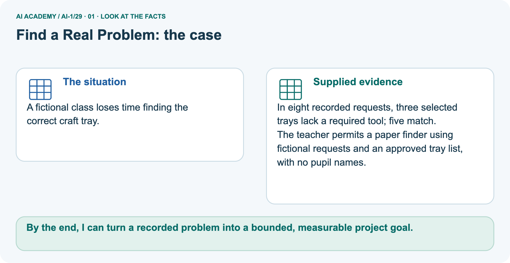

A fictional class loses time finding the correct craft tray. Supplied facts: In eight recorded requests, three selected trays lack a required tool; five match.
The teacher permits a paper finder using fictional requests and an approved tray list, with no pupil names.
Point to the given fact that matters most. Explain why it matters.
02. Follow the deciding steps
Observe problem: Three mismatches are recorded out of eight requests. → Define need: Help users choose a tray containing every requested tool. → Set success test: Compare selected tray against the approved inventory for each new case. → Bound the project: Use fictional tool requests; do not collect identity or purchase equipment.
Point to each numbered stage and explain which recorded input it uses.
03. From an observed difficulty to a testable goal
From an observed difficulty to a testable goal. 4 of 10 choices mismatch | Some re-selection occurred | Cause is not established. Need a compatible choice | Check time and conditions | User can still decline.
Paper suggestion process | Small permitted prototype | Benefit needs a comparison. Measure fit and coverage | Observe useful outcomes | Do not hide no-result cases
Read the labels and values. Explain the relationship the model shows.
04. Change one thing. Trace what follows.
Original case: Use fictional tool requests; do not collect identity or purchase equipment. Changed condition: The approved list contains no tray with every requested tool.
Expected result: The finder should report no suitable tray rather than guess. Reason: Success includes honestly identifying unsatisfied requirements.
Predict before checking the worked changed-case result. Name what changed and what the supplied facts allow you to conclude.
05. Connect the explanation to its limit

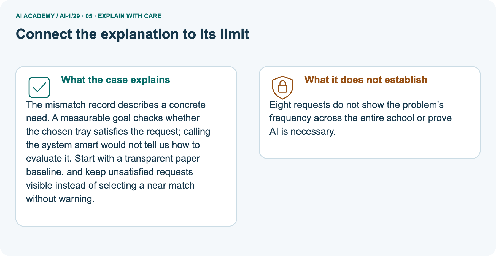

The mismatch record describes a concrete need. A measurable goal checks whether the chosen tray satisfies the request; calling the system smart would not tell us how to evaluate it.
Start with a transparent paper baseline, and keep unsatisfied requests visible instead of selecting a near match without warning.
Limit: Eight requests do not show the problem’s frequency across the entire school or prove AI is necessary.
Explain the case, then point to a limit on the claim.
06. Make the idea visible in your project

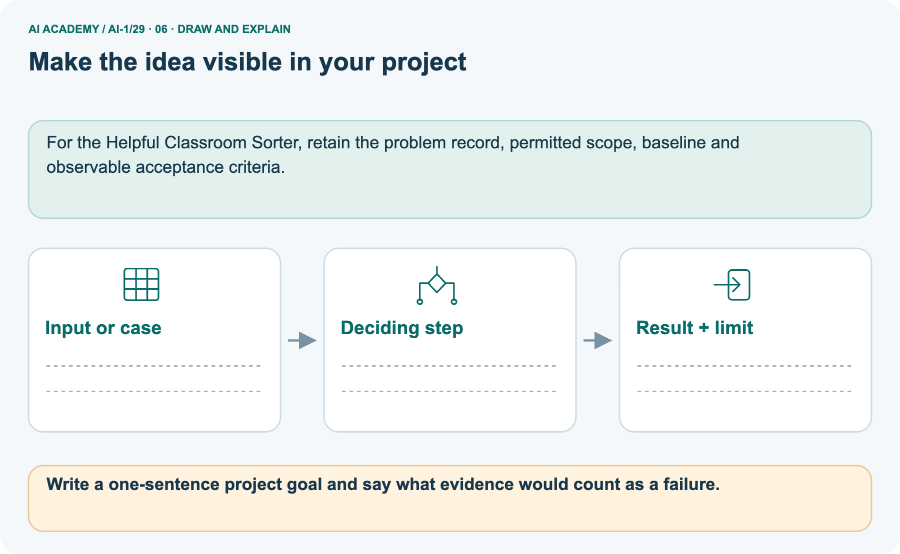

For the Helpful Classroom Sorter, retain the problem record, permitted scope, baseline and observable acceptance criteria. Draw your input, deciding step, result and limit.
Supported question: Write a one-sentence project goal and say what evidence would count as a failure.
Draw your project trace and justify the deciding step using evidence.